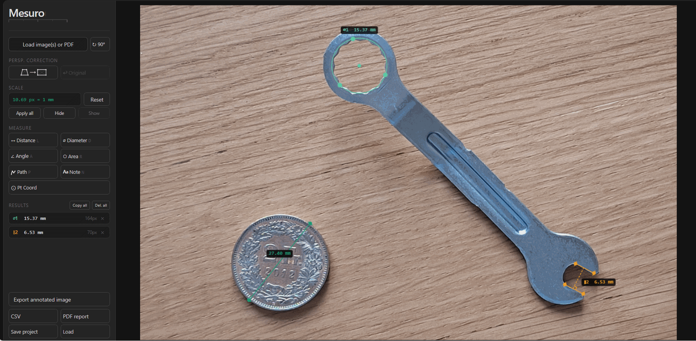

Load the photo
Open an image containing both the item and a reference object with a known size.
Photo measurement
Use Mesuro when a photo contains a reliable reference object: set scale from a coin, ruler, or known part, then measure nearby objects in real units without leaving the browser.

Open an image containing both the item and a reference object with a known size.
Measure the known object first, then enter its real-world dimension.
Check lengths, diameters, areas, or other geometry in calibrated units.
Save an annotated image, PDF report, CSV file, or reusable project.
Use any visible object with a known size, such as a coin, ruler segment, gauge block, or another part with a trusted dimension.
For best results, keep the reference object in the same plane as the item you want to measure so perspective affects both similarly.
Yes. If the photographed surface is skewed, use perspective correction before calibrated measurement when you have a suitable rectangular reference.